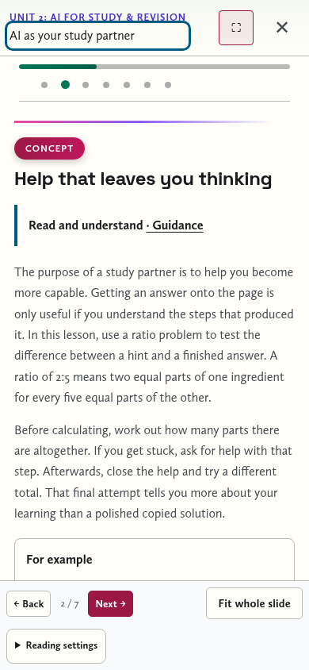

Enough explanation
to work independently.
Teaching-text review · 26 October 2026
The problem
Some slides named an idea and moved to a task before explaining enough for a pupil working alone. Other activities repeated generic instructions without specifying the starting point or expected work. The revision treats the slides as teaching, rather than prompts for a teacher speaking alongside them.
What changed
- 94 distinct lessons now have an authored learning purpose, expanded core explanation and a separate illustrative example: 40 Removes, 40 specialist AEP and 14 project sessions.
- The 20 Passport lessons and 19 AEP crossover lessons inherit the actual Removes teaching.
- Every rendered slide has guidance appropriate to reading, practising, comparing, making a judgement or checking understanding. The lesson purpose remains available in the compact guidance disclosure.
- Removes tasks explain how to start, what to keep and what to check. Seven study-lesson answer comparisons now explain the method and the correction, not just the result.
- Fictional cases and explicit solo alternatives remove dependencies on personal disclosure, live accounts, missing teacher articles or an available team in the revised activities.
- The agent portfolio now explains PTFC and makes its brief, checks and self-review criteria agree. A successful response need not invent an expert persona or claim a live tool test.
The writing uses direct explanations, practical decisions and questions that ask pupils to justify their thinking. Specialist terms are introduced where they become useful. The aim is a clear teacherly voice with room for uncertainty, rather than slogans or a longer block of instructions.
One concrete example
The study-partner lesson previously said that a useful hint leaves something to think through, then asked pupils to solve a ratio problem. It now explains what the ratio means, models a separate 1:2 example, identifies the useful first hint and asks pupils to retain their unaided attempt.
The answer comparison then works through seven equal parts, unit conversion, multiplication and both checks. It helps a pupil identify whether an error came from units, parts or multiplication. The purpose is still to learn without outsourcing the thinking.
Open the revised study-partner lesson · Open the specialist AEP explanation of retrieval

Continuity and checks
The course counts, lesson IDs, slide positions and saved-work keys remain stable. Sources, quiz answer keys and essential fictional practice materials are retained. This is an expansion of the teaching in the existing lessons, not another set of lessons.
Browser checks rendered 397 Removes slides, 199 Passport slides, 344 specialist AEP slides and 176 project slides with guidance. The count includes Passport presentations of shared content. The 19 shared AEP lessons also passed canonical-parity and saved-work checks.
Worked-answer reveals, shared notes, standalone Passport and offline reading passed. Phone checks found no detected axe-core violations in nine representative lesson/display-mode combinations with guidance expanded. Text enlargement and narrow-screen reflow passed on the tested journey. These are automated Chromium checks, not a claim about every assistive-technology combination.
Read the browser receipt. Run node tests/teaching-guidance.cjs and node tests/teaching-browser.cjs for the new checks, alongside the existing curriculum and player suites.
What still needs a pupil’s judgement
The rewrite makes the purpose and process explicit. Whether the level of detail is right needs observation with pupils: ask them to explain the purpose, complete the task unaided and identify the sentence or example that helped. Use the pupil-trial guide to record where they still need support. The full slide corpus has not been rewritten line by line; this pass expands every core explanation, provides guidance throughout and repairs the identified task gaps.